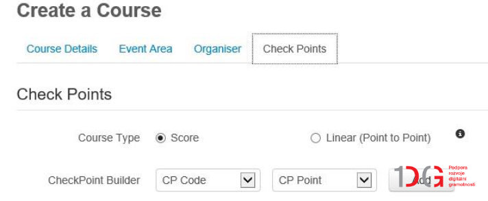

Principem navrhované implementace digitální technologie do pohybové aktivity
je využití QR kódu
(umístěném na kontrolním stanovišti v terénu) a aplikace v mobilním telefonu žáka, jako
prostředků pro záznam průchodu
kontrolním stanovištěm při pohybové aktivitě vycházející z principů orientačního sportu.
Popis aktivity
Zvolenou pohybovou aktivitou je orientační běh, přičemž standartní způsob
záznamu průchodu kontrolním stanovištěm (manuální kleště,
či elektronický čip) je nahrazen skenováním QR kódu prostřednictvím aplikace iOrienteering,
kterou má účastník orientační aktivity (závodu) nainstalovanou ve svém mobilním telefonu.
Postup žáka (účastníka orientačního závodu)
Stažení instalace a přihlášení do aplikace iOrienteering v mobilním telefonu (vyžadováno
datové připojení) – Android
| iOS
Přesun na startovní pozici
Skenování QR kódu na mapě či separátním listu pro načtení konkrétního orientačního závodu
(již plně offline)
Skenování startovního QR kódu a vlastní start (obrázek 1)
Postupné dosažení jednotlivých kontrolních bodů (dle zadání – volné či pevné pořadí kontrol)
a samoobslužné skenování QR kódu na každém kontrolním stanovišti
Skenování cílového QR kódu po dosažení cíle závodu
Upload výsledků a jejich prohlížení na iorienteering.com (nutné datové připojené)
Obrázek 1 Ilustrativní příklad
skenování startovního
QE kódu prostřednictvím mobilního telefonu a aplikace iOrienteering (iOrienteering, 2019)
Postup vyučujícího (popř. osoby organizující orientační závod)
Výběr vhodného prostoru a mapového podkladu (orientační mapa, plánek budovy, schématický
plánek či náčrt – viz příloha 2 a 4)
Návrh vlastní trati (pevné či volné pořadí kontrol)
Příprava a tisk jednotlivých QR kódů v prostředí webové stránky iorienteering.com
Po přihlášení k vlastnímu účtu v záložce Events vybrat Create a Course
(obrázek 2)
Obrázek 2 Vytvoření
závodu (event)
Postupovat podle pokynů – název, lokace atd...
Ve 4. kroku zvolit zda půjde o volné (score) či pevné (linear) pořadí kontrol (obrázek 3)

Obrázek 3 Volba pořadí
kontrol
Posledním krokem tvorby trati je na totožné stránce přidat počet kontrolních stanovišť
(check points) a jejich kód (z rozevírací nabídky – na obrázku 4 je příklad 5 kontrol v
pevném pořadí)
Obrázek 4 Počet
kontrolních stanovišť (check points)
Po uložení (save) trati je tato připravena k tisku QR kódů – trať nalezneme pod záložkou
My Courses (obrázek 5)
Obrázek 5 Trať je
připravena k tisku QR kódů
Volbou Details se dostaneme k samotnému tisku QR kódů (obrázek 6)
Obrázek 6 Tisk QR kódů
Tiskneme 4 typy QR kódů
Course Setup (pro načtení informací o závodu)
Course Start (startovní kód – po jeho načetní běží závodníkovi jeho čas)
Check Point (jednotlivé kontrolní body)
Course End Check Point (cíl a konec závodu, po načtení se zastaví závodníkovu měření
času)
QR kódy je vhodné zalaminovat a poté je možné je rozmístit na příslušné body
v terénu. Veškerou další činnost již provádí žák (účastník závodů) samostatně.
Po načtení cílového QR kódu je možno odeslat data prostřednictvím aplikace
na server. Tato operace na rozdíl od absolvování závodu a načítaní všech typů QR kódu již
vyžaduje internetové připojení. Samotný přenos je datově nenáročný. Výsledky je pak možné
zkontrolovat na stránce iorienteering.com (viz
příloha 3).
Přílohy
Příloha 1
Příklady jednotlivých QR kódů pro realizaci orientačního závodu
Poznámka: Mapové podklady budou pro cvičené školy k
dispozici po ukončení nákupů z projektu. Rovněž bude k dipsozici omezené množství mobilních
tefonních přístrojů.


{kind=link}
{kind=link}
{kind=link}
{kind=link}
{kind=link}
{kind=link}
{kind=link}
{kind=link}
{kind=link}
{kind=link}
{kind=link}
{kind=link}
{kind=link}